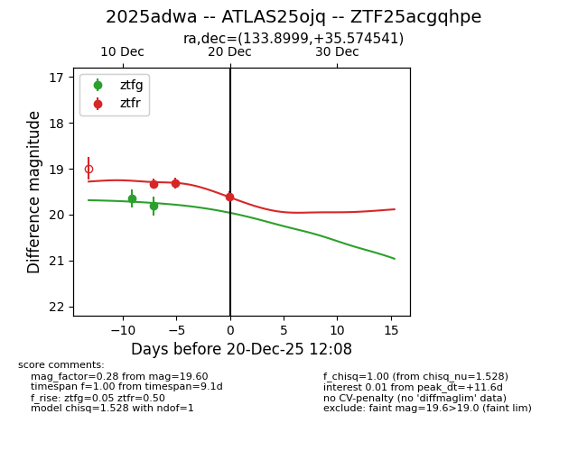
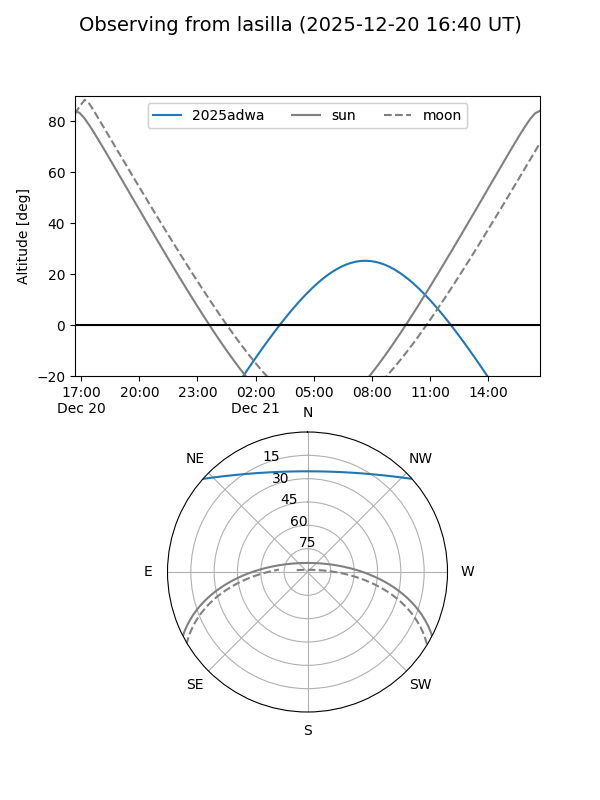
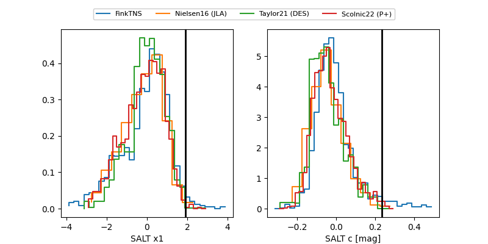

2025adwa
Target 2025adwa at 2025-12-20 12:09
Aliases and brokers:
FINK: fink-portal.org/ZTF25acgqhpe
Lasair: lasair-ztf.lsst.ac.uk/objects/ZTF25acgqhpe
ALeRCE: alerce.online/object/ZTF25acgqhpe
TNS: wis-tns.org/object/2025adwa
YSE: ziggy.ucolick.org/yse/transient_detail/2025adwa
alt names
ZTF25acgqhpe (ztf,fink_ztf)
2025adwa (tns,yse)
ATLAS25ojq (atlas)
Coordinates:
equatorial (ra, dec) = 133.8999,+35.57454
equatorial (HMS+DMS) = 08:55:35.97,+35:34:28.35
galactic (l, b) = (187.8270,+39.68283)
Flags:
Photometry:
last ztfg=19.81, ztfr=19.60
2 ztfg, 3 ztfr detections
Lightcurve

Visibility


Additional plots
